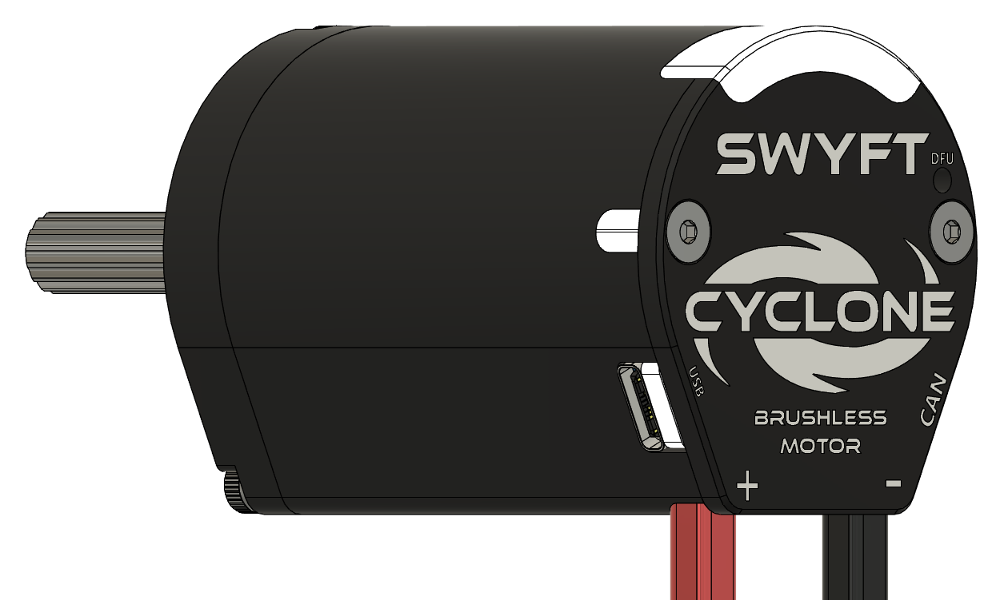

SWYFT Cyclone
A brushless motor, its controller, and an absolute encoder in one housing. Built for FRC.

What it is
The Cyclone is one integrated unit — a brushless motor, its controller, and a 14-bit absolute encoder in a single package, not a controller wired to a separate motor. It commutates itself with sensored trapezoidal control and reads its own shaft angle. Power, CAN FD, and USB-C connect at the back of the unit. Configure it from the vendor library in robot code, or from SWYFT Link.
- Motor, controller, and absolute encoder in one unit
- 14-bit encoder — 16,384 counts per turn
- CAN FD and USB-C, each a full control path
- Configurable stator and supply current limits with thermal protection
- Direction and offset calibrated on the motor and kept across a re-flash
- Seven-light status and user LED strip
- Runs on the 2027 SystemCore
Where to go
- Wiring and First power-up — get a motor running.
- Specifications, Mounting, Orientation — the hardware reference.
- Robot code — install the vendor library and drive the motor.
- SWYFT Link — configure, tune, and recover from a browser or the SystemCore.
- Safety & current limits — protect the motor and pick limits per mechanism.
- Status lights and Troubleshooting — read the motor and fix problems.